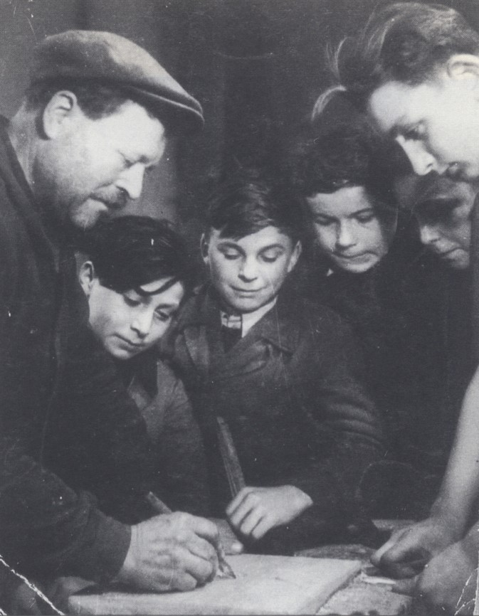

Portrait d’archive
Enfants Goldberg
Henri Haïm GOLDBERG
Nom : GOLDBERG
Prénom(s) : Henri Haïm Hersz
Date naissance : 30/12/1930
Âge (ans) : 13
Lieu naissance : Paris 12
Pays ou département : Seine
Lieu rassemblement : Lyon
Dernière adresse : ?
Ville : Izieu (Ain)
Code postal : 01300
N° Convoi : 71
Date déportation : 13/04/1944
Informations diverses : Fils de Gita et d'Amyl. Goldberg (Chaim, Hersz), né le 30 novembre 1930 à Paris (10e) (Seine), décédé le 18 avril 1944 à Auschwitz (Pologne). Henri Goldberg, 13 ans, est un titi parisien un peu gavroche, devenu à Izieu un petit cultivateur passionné.
Lieu de déportation : Auschwitz
Lieu de départ : Drancy
Nombre total de déporté·e·s du convoi : 1500
Gazé·e·s à l'arrivée : 1265 (84,3 %)
Survivant·e·s en 1945 : 128 (8,5 %)
Joseph GOLDBERG
Nom : GOLDBERG
Prénom(s) : Joseph
Date naissance : 01/03/1932
Âge (ans) : 12
Lieu naissance : Paris 12
Pays ou département : Seine
Lieu rassemblement : Lyon
Dernière adresse : ?
Ville : Izieu (Ain)
Code postal : 01300
N° Convoi : 71
Date déportation : 13/04/1944
Informations diverses : Fils de Gita et d'Amyl. Goldberg (Joseph), né le 29 février 1932 à Paris (12e) (Seine), décédé le 18 avril 1944 à Auschwitz (Pologne) (JO n° 284 du 8/12/1993)
Lieu de déportation : Auschwitz
Lieu de départ : Drancy
Nombre total de déporté·e·s du convoi : 1500
Gazé·e·s à l'arrivée : 1265 (84,3 %)
Survivant·e·s en 1945 : 128 (8,5 %)